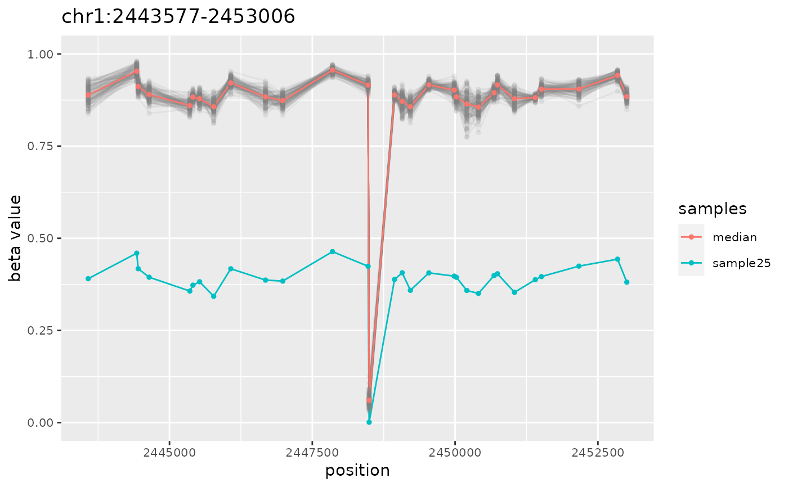
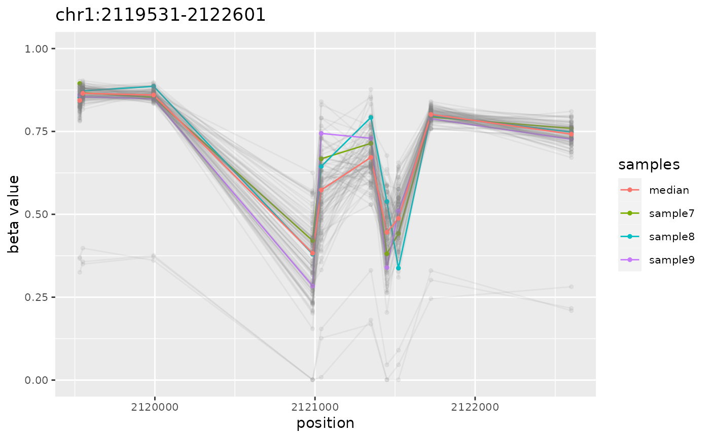

R/ramr-data.R
ramr.data.RdData was simulated using GSE51032 dataset as described in the reference.
Current dataset ("ramr.data") contains beta values for 10000 CpGs
and 100 samples ("ramr.samples"), and carries 6 unique
("ramr.tp.unique") and 15 non-unique ("ramr.tp.nonunique")
true positive AMRs containing at least 10 CpGs with their beta values
increased/decreased by 0.5.
data(ramr)Objects of class "GRanges" ("ramr.data, ramr.tp.unique,
ramr.tp.nonunique") and "character" ("ramr.samples").
Nikolaienko et al., 2020 (bioRxiv)
data(ramr)
amrs <- getAMR(ramr.data, ramr.samples, ramr.method="beta", min.cpgs=5,
merge.window=1000, qval.cutoff=1e-3, cores=2)
#> Identifying AMRs
#> [12.836s]
plotAMR(ramr.data, ramr.samples, amrs[1])
#> [[1]]

#>
plotAMR(ramr.data, ramr.samples, ramr.tp.nonunique[4],
highlight=c("sample7","sample8","sample9"))
#> [[1]]

#>